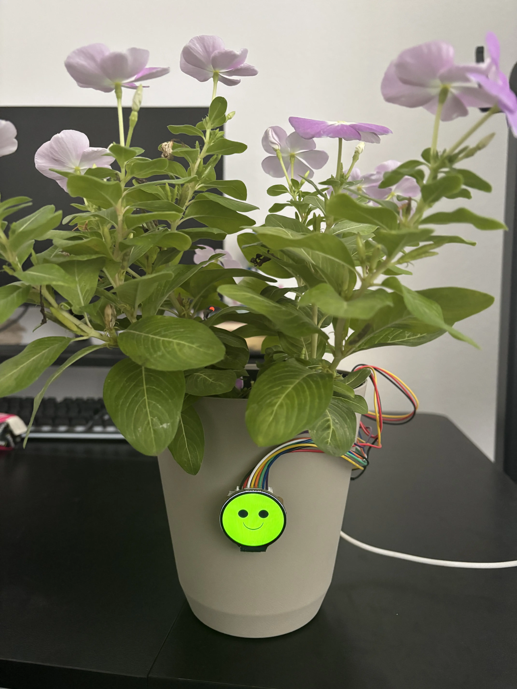

ISM Digital Portfolio
Sai Dandamudi
Electrical Engineering, specifically PCB Design
“The wise man knows he doesn't know. The fool doesn't know he doesn't know.”
My digital footprint is an online portfolio of who I am, what I care about, and how I am developing professionally through the Independent Study and Mentorship program.
About Me
Professional Profile
Sai Dandamudi
I am a high school student with a strong interest in electrical and computer engineering, embedded systems, and electronics design. Through hands-on projects involving microcontrollers, sensors, and circuit development, I have built a solid foundation in hardware integration and embedded programming. I am eager to apply engineering principles to develop innovative and reliable electronic systems while continuing to expand my technical expertise.
Through ISM, I have developed a stronger understanding of the field while improving my research, communication, and professional habits. I hope to continue learning and contributing in a way that reflects my values and ambitions.
Mission Statement
My mission is to use Computer Engineering to create PCBs that power intelligent, automated hardware solutions.
Contact Information
saidandamudi@email.com
Résumé
Professional Summary
Education
High School Name, City, State
Expected Graduation: 2027
Skills
- PCB design
- Embedded systems
- Research and analysis
- Professional communication
Experience
Independent Study and Mentorship Program
Research, interviews, mentorship, and portfolio development
About ISM
Independent Study and Mentorship
The Independent Study and Mentorship (ISM) program gives students the opportunity to explore a field of interest through guided research, mentorship, and personal development.
Students connect with professionals, conduct meaningful research, and build skills in communication, planning, and presentation. ISM helps prepare students for future opportunities in college, internships, and their careers.
Weekly Progress Updates
Blog
Research
Source Collection
Primary Sources
Interview: Professional Name
Company: Placeholder Company
Topic: Industry overview and career insight
Interview: Professional Name
Company: Placeholder Company
Topic: Professional path and advice
Mentor Visit
Topic: Research discussion and project feedback
Observation
Event: Placeholder event or experience observed
Secondary Sources
Article: Topic Placeholder
Subject: Current research and industry trends
Article: Topic Placeholder
Subject: Background information and educational context
Article: Topic Placeholder
Subject: Professional practice and application
Article: Topic Placeholder
Subject: Research methodology and best practices
Mentorship
Mentor Profile

Mentor Name
Professional Title / Company
Mentor bio placeholder. This section will include background, experience, and the professional guidance that supports the student’s research and growth.
The mentor helps build knowledge, refine project direction, and encourage thoughtful reflection throughout the learning process.
Projects
Original Work and Final Product

Plant Soil Moisture Monitoring System
Designed and programmed an ESP32-based soil moisture monitoring system that collects real-time sensor data and displays plant moisture levels on a TFT display.
Original Work
Research Proposal
A plan for the project question, goals, method, and process behind the investigation.
Field Notes
Documentation of mentor meetings, interview insights, and observations made during the research process.
Final Product
Research Showcase
A summary of findings, conclusions, and the broader significance of the work.
Presentation
A final presentation highlighting process, learning, and the impact of mentorship.